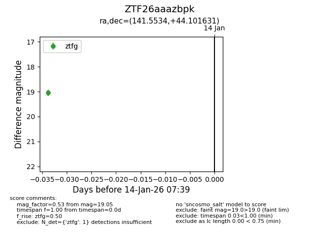
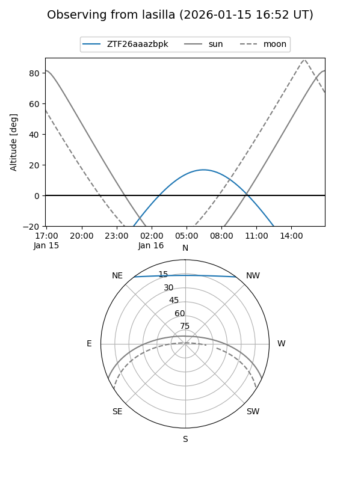
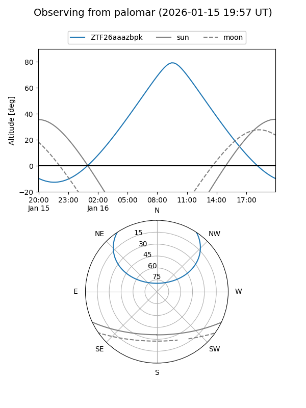

ZTF26aaazbpk
Target ZTF26aaazbpk at 2026-01-16 07:45
Aliases and brokers:
FINK: link
Lasair: link
ALeRCE: link
alt names
ZTF26aaazbpk (ztf,fink_ztf)
Coordinates:
equatorial (ra, dec) = 141.5534,+44.10163
equatorial (HMS+DMS) = 09:26:12.81,+44:06:05.87
galactic (l, b) = (176.4363,+45.79728)
Flags:
Photometry:
last ztfg=19.05
2 ztfg detections
Lightcurve

Visibility


Additional plots